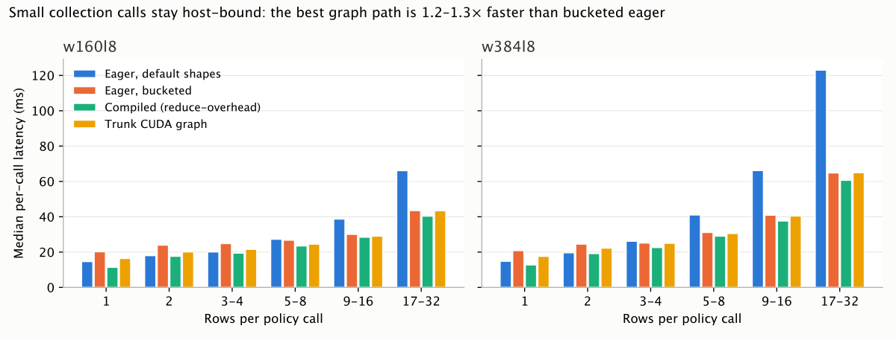

The deliverable is a report (experiments/collection_tail_graphs.md), its published evidence and the
frozen experiment file; no product code changes. Its users read the report, fetch its evidence and may rerun it.
I did all three and checked each number the report states against the evidence it cites.
In a fresh detached checkout of HEAD with an empty MANABOT_DATA_CACHE:
doppler run --project manabot --config prd -- python -m manabot.data fetch \
experiments/data/collection_tail_graphs/{latency-by-band.svg,summary.json,insitu,probe,job.json}
fetched 5 files; 0 already present; 0 digests from the cache, 5 downloaded (1407043 bytes)
The fetched summary.json is byte-identical to the local one. A head_object over all 66
manifest entries found every object at its manifest size (268 MB not downloaded).
The chart renders cleanly: labelled axes, both sizes, four arms, and a title that states the answer.
Like every report in experiments/, its image lives in the artifact store, so on GitHub it appears only after a fetch.

| Claim | Evidence | Result |
|---|---|---|
| Latency table (all 24 cells), speedups 1.32/1.19/1.17/1.06× | summary.json replays, decision | match |
| Numerics 9.8e-9 / 2.4e-7 / 4.8e-7; repeat drift | decision.numerics_worst, repeat-w160l8 | match |
| Rule 4 projection 58.8 → 57.8 / 58.5 s | projected_update_s | match |
| 23 synchronizing calls by site | probe.syncs.sites (6+6+5+2+1+1+1+1) | match |
| Launches 681 → 145, syncs 33 → 19, trunk replaces ~165, GPU busy 1.9/3.1 ms | profiler windows, ≤ 8-row medians (681, 145, 517; 33.5, 19; 1.89, 3.12 ms) | match |
| In-situ table (calls, ≤8 and 9–32 counts and times, phases) | insitu.updates | match |
| Calls equal steps; 367–396 signatures | calls_equal_steps true ×3; 396/389/367 | match |
| Recording split, 81–89% explained, store doublings | insitu recording | match |
| Graph breaks: nonzero 29, GRU 16, sort 30, two scalar reads | compile logs (both sizes) | match |
| Admission-binding breaks “23” | logs: 17 to_json + 7 named_modules = 24 | fixed → 24 |
| “24 retained inputs”, “1–5 inputs” per band (4 places) | kept = 20 (bands 1,4,1,4,3,3,2,2); 20 files in inputs/inference; 20 per_input per arm | fixed → 20, 1–4 |
| 38 graph partitions per forward | not separately recorded in summary | not checked |
etude launch experiments/collection_tail_graphs.py --help lists --rent, --cohort,
--max-usd and the file's own --revision and --hours: the appendix command is valid.
I did not launch it, because that rents a GPU.
ETUDE_OUTPUT_DIR=/tmp/qa318/smoke/out uv run python -m experiments.collection_tail_graphs job --smoke exit 0 in 2 m 39 s; all five replay arms status ok; summary.json written; no analyze-error.txt
pytest tests/eval/test_experiment_files.py tests/infra/test_experiment_data_untracked.py → 5 passed git diff 8b753ade3 HEAD -- experiments/collection_tail_graphs.py → identical (freeze holds)
summary.json.